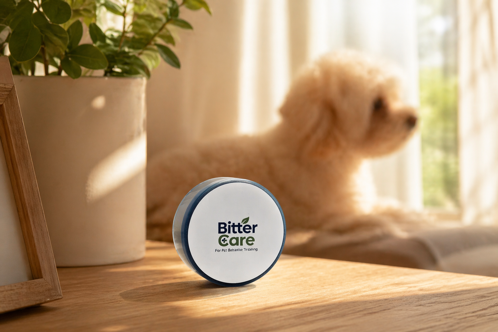

자주 묻는 질문
잘 붙이는 법부터 반응이 다른 이유까지. 궁금했던 점을 하나씩 확인해 보세요.

효과와 사용법
첫 사용 전에도, 사용 중에도 참고해 주세요.
모든 강아지에게 같은 반응이 나오나요?
아닙니다. 쓴맛 민감도, 습관 강도, 접촉 위치와 사용 환경에 따라 반응에는 차이가 있을 수 있습니다.
어디에 붙이는 게 가장 중요한가요?
강아지가 실제로 입을 대는 위치에 정확히 부착해야 합니다. 주변이 아니라 실제 접촉면을 기준으로 보세요.
처음 사용할 때 며칠 정도 관찰해야 하나요?
처음 며칠은 반응을 보며 위치와 범위를 조정해 주세요. 반응이 약하면 밀착 상태와 실제 접촉 위치를 먼저 확인하는 것이 좋습니다.
강아지에게 직접 맛보게 해도 되나요?
직접 맛보게 하지 마세요. 반복적으로 무는 가구나 문틀처럼 입이 닿는 곳에 붙여 자연스럽게 접촉하도록 사용하는 제품입니다.
전선에도 사용할 수 있나요?
전선에 사용할 때는 손상 여부를 먼저 확인하고, 전원을 분리한 상태에서 짧게 감아 밀착해 주세요. 비터케어는 절연·감전 방지 제품이 아닙니다. 손상된 전선에는 사용하지 말고, 전선은 강아지가 닿지 않게 별도로 정리해 주세요.
효과가 약해진 것 같으면 어떻게 하나요?
표면 오염, 접촉 빈도, 부착 위치를 확인하고 필요하면 새 스티커로 교체해 주세요.
제거할 때 자국이 남지 않나요?
표면 소재에 따라 차이가 있을 수 있으므로 민감한 소재는 사전 테스트를 권장합니다. 제거할 때는 모서리부터 천천히 떼어 주세요.
스티커 자체를 물고 뜯으면 어떻게 하나요?
끝부분의 들뜸과 부착 범위를 확인해 주세요. 계속 뜯으려고 하면 스티커를 제거하고 씹어도 되는 대체물을 제공해 주세요.
소파나 러그에도 붙일 수 있나요?
천·러그·거친 표면은 접착이 어렵거나 들뜰 수 있습니다. 매끈한 가구나 문틀처럼 입이 닿는 곳을 중심으로 사용하고, 민감한 소재에는 사전 테스트를 해 주세요.
무료 성향 분석은 제품 구매가 필요한가요?
제품을 구매하기 전에도 무료 성향 분석 서비스를 이용할 수 있습니다. 무료 제공 대상은 성향 분석이며 제품은 별도 구매입니다. 분석 결과는 참고 정보입니다.
사용법을 먼저 보면
더 쉽습니다.
부착 위치와 방법을 한 번 확인하면 제품 사용이 훨씬 단순해집니다.
사용하다 막히는 순간에도, 함께할게요.
부착 위치부터 제품 문의까지. 상황을 남겨주시면 확인 후 이메일로 답변드리겠습니다.